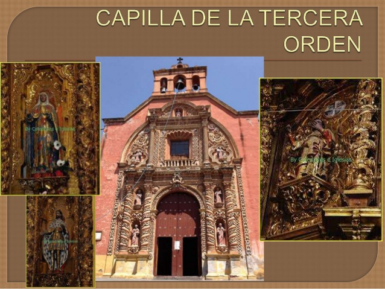
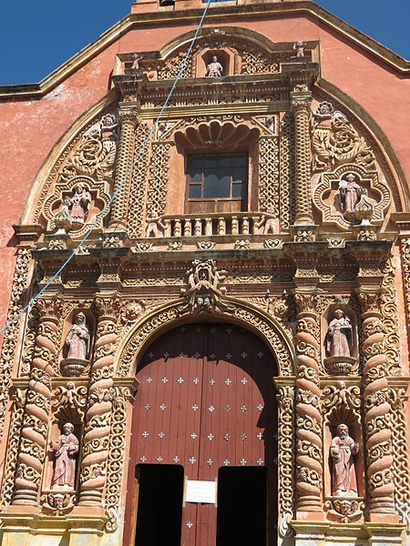
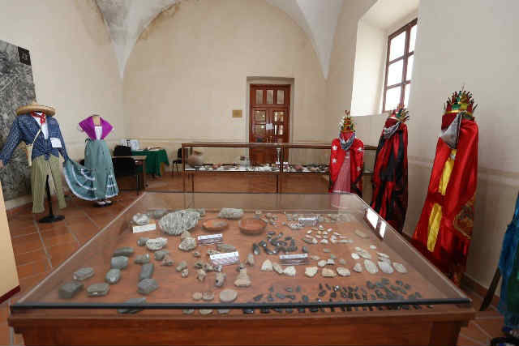
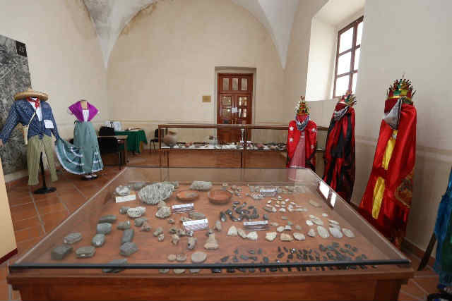
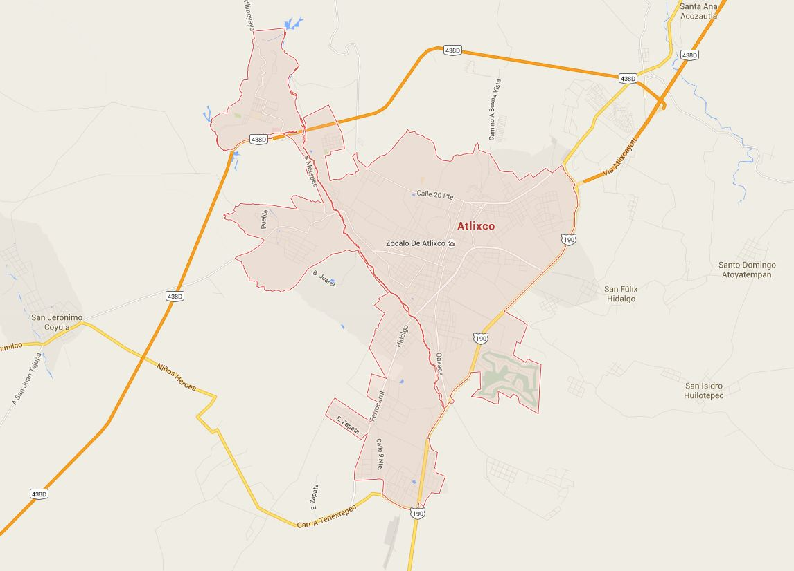

ATLIXCO DE LAS FLORES
ATLIXCO DE LAS FLORES

Heroica Atlixco (en nahuatl: atl, ixtlatl, co, ‘agua, valle, lugar’‘Lugar del valle de agua’), también conocido como «Atlixco de las flores», es una ciudad que se localiza al suroeste de la ciudad de puebla. Recibió su título de «Heroica»5 debido a la batalla del 1862 que precedería a la batala de puebla del 5 de mayo de 1862.
Es conocido por su buen clima y la gran actividad florística, comercial y turística que le valieron haber sido llamada Atlixco de las Flores y Granero de la Nueva España, durante la época colonial.
El último domingo de septiembre, en la explanada del cerro de San Miguel, Atlixco se convierte en la sede de un festival en el que se reúnen los representantes de las once regiones culturales del estado de Puebla, festival que es llamado «huey atlixcallotl» o Fiesta Grande de Atlixco y que es patrimonio cultural del estado de Puebla.
Hacia el año 1100 d.C. el valle de Atlixco se hallaba ocupado por pobladores de origen teochimecas que bajo el dominio de la gran tenostitlan, se asentaron primeramente al poniente del cerro de San Miguel, hoy Solares Grandes. Estos primeros pueblos fundaron así Quauhquechollan (Águila que huye) y que tiempo después llamaron Acapetlahuacan, "Lugar de división del señorío". Su posición geográfica hizo que fuera escenario de luchas entre los diversos grupos indígenas que estaban asentados en los alrededores. Los pueblos de calpan, huejotzingo y cholula se disputaron en diversas épocas la posesión del valle, que con la llegada de los españoles se encontraba bajo el dominio de huejotzingo.
La nueva población que fundaron fue también llamada Quauhquechollan, la actual Huaquechula a donde emigraron los Calpan y los Huejotzincas.
También conocido como Popocatica (cerro que humea) o Macuilxochitpec (cerro de las cinco flores), es el lugar en donde se realiza la fiesta máxima de Atlixco que se lleva a cabo el último domingo de septiembre y para la que se reúnen los representantes de las once regiones culturales de Puebla. Pero aunque tu visita no coincida con la fecha, el lugar te ofrece una maravillosa vista panorámica y siempre puedes visitar la Capilla de San Miguel.

La Iglesia de Nuestra Señora del Carmen se encuentra a sólo seis calles de la Catedral. El pequeño atrio de la Iglesia sus Capillas y decoración interior, que recuerdan la Capilla del Rosario, crean un ambiente de recogimiento que vale la pena disfrutar. Una de las capillas guarda la famosa reliquia de la Cruz de Huatulco, aquella que no pudo ser destruida por los piratas comandados por Thomas Canvendish y que se mantuvo en pié a pesar de los esfuerzos por destruirla. La capilla de Nuestra Señora del Carmen es bellísima por sus decorados de argamasa.

Su arquitectura sobria y de gran sencillez relaciona este convento con el de San Ángel en la ciudad de México.
La Iglesia y Convento del Carmen debió ser el edificio religioso más importante de Atlixco. Limitado por enorme barda, abarca aproximadamente dos manzanas, comprendió como todos los edificios de la misma orden un claustro pequeño, uno o dos claustros grandes, huerta, dependencias e iglesia anexa a todo el convento.La construcción del Convento y su Iglesia data de 1600 a 1620. La Iglesia esta orientada de norte a sur, a este lado la fachada principal. Flanqueada por dos contrafuertes, es un ejemplo del estilo barroco de la primera mitad del Siglo XVII. La puerta alta y estrecha, está enmarcada por dos pilastras almohadilladas, en el entablamiento una inscripción: “SOLI DEO HONOR & GLORIA”.
 

https://www.zonaturistica.com/atractivos-turisticos-en/391/atlixco-puebla.html
Se ubica a 25 km de la ciudad de Puebla, capital del Estado y cuenta con dos importantes vías de acceso: la Carretera Federal 190 y la moderna Autopista Vía Atlixcáyotl.
Actualmente, es una moderna ciudad con más de cien mil habitantes, que ha logrado armonizar su desarrollo urbano con el majestuoso legado de arquitectura colonial que dejaron sus fundadores (1579), y que hoy es uno de los principales atractivos turísticos de este municipio.

Una vuelta por el zócalo es una experiencia inolvidable, saboreando los ricos helados y sorbetes que venden cerca de allí, así mismo entrar a algún restaurante para degustar la cecina atlixquense, el guacamole, el consomé Atlixquense, o las truchas en sus diferentes modalidades. A tan solo una cuadra del centro, en el mercado encontrarás tortillas hechas a mano, expendios de cecina, tlacoyos, quesos frescos de la región o si eres de "gustoso paladar" podrás comer los originales chapulines fritos con sal y limón.

